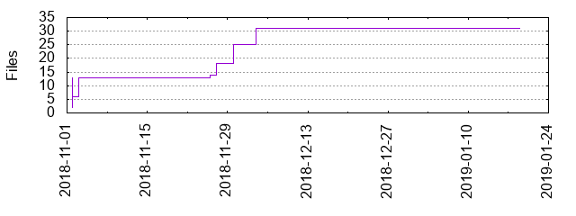

Files
General
Activity
Authors
Files
Lines
Tags
Total files
31
Total lines
42917
Average file size
396236.58 bytes
File count by date

Extensions
Extension
Files (%)
Lines (%)
Lines/file
2 (6.45%)
22 (0.05%)
11
ai
6 (19.35%)
42154 (98.22%)
7025
md
2 (6.45%)
158 (0.37%)
79
pdf
1 (3.23%)
356 (0.83%)
356
png
14 (45.16%)
3403 (7.93%)
243
svg
6 (19.35%)
577 (1.34%)
96